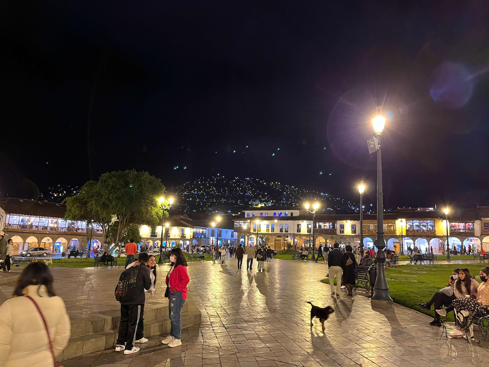
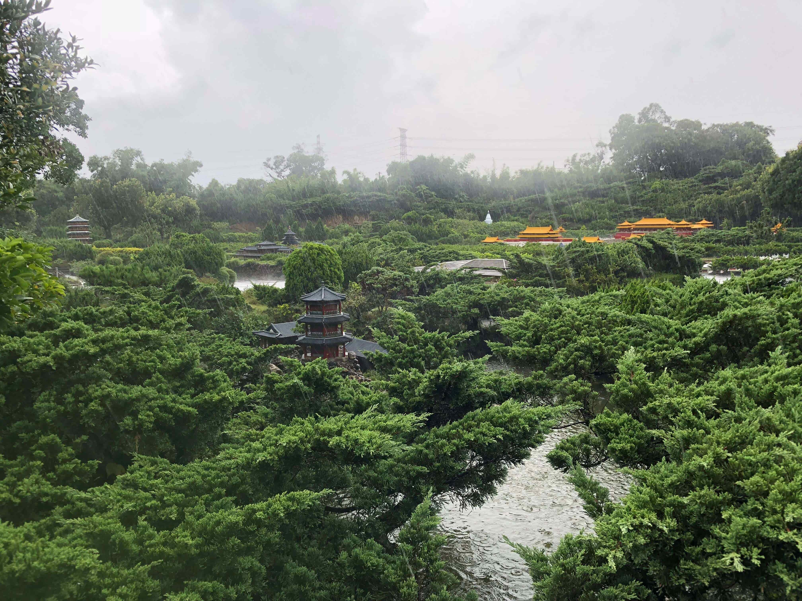
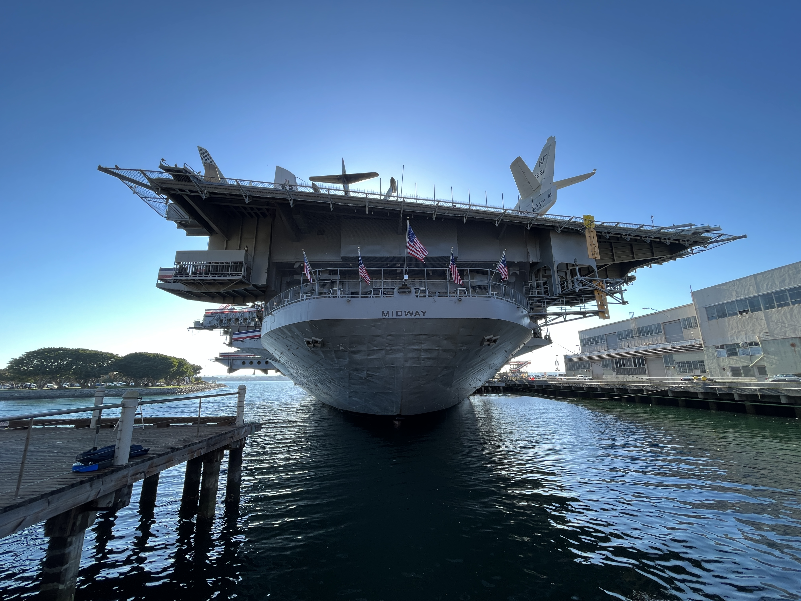
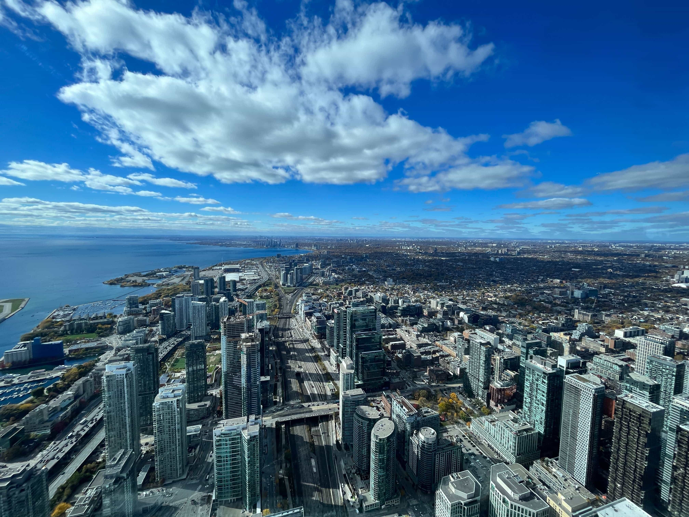

Digital Photography
For quite a while now I've been taking photos of anything I found that was interesting. I quite enjoying exploring and taking photographs of whatever I come across. I mostly take photos when I am travelling, and I have a lot of photos form my travels. In fact I awlays take so many photos that my phone ends up with no storage space left. Below are some of my favourite photos taken on my phone.
Nighttime in Cusco
Stairway to Nowhere

Rainy Day in Taiwan
Yosemite Valley

Midway
Toronto
On the Eiffel Tower

Streets of Cologne

At Machu Picchu

Taipei

101

Toby

Film Photography
Recently I joined a photography program called Through the Lens which was offered at my school. There we learned how to take photos with film cameras, develop film and print out photographs in a dark room. I often wonder how people figured this stuff out, because developing and printing film feels like magic. Overall I had a lot of fun in the Through the Lens program and I got to develop my very own film. Below are some photos I took with an Asahi Pentax KX camera.
Fireplace

Reflection in the Car Mirror

Canmore at Night

A Handsome Catboy

It is a squirrél!

Dude

Kananaskis Country

Friends

Piney Shrubbery

The Wild Dumbass

Snowy Backyard

The Plague of the Woods

In addition to my photographs, I also created a short, spooky video which features some more photographs not shown above. The video below details the disturbing disappearance of Lucas Baker. I tried to make it look like found footage stored on an old VHS tape by adding some vintage effects to the video along with some background noise.
I edited this video using Davinci Resolve. It's a pretty nice editing software, the only problem is that it sets my computer on fire whenever I boot it up. The editing itself also came with some challenges, like finding the right pacing, sound effects and overlays to use in my video to make it look old and creepy.